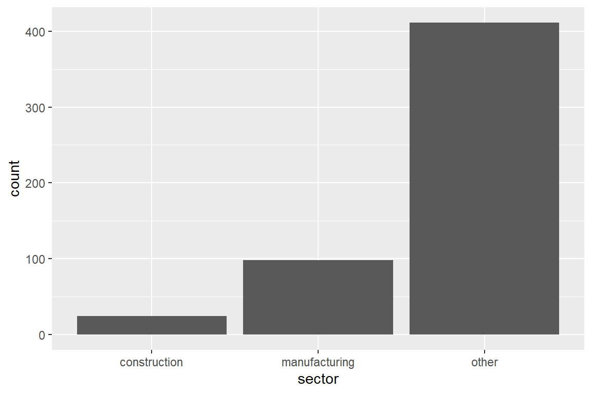
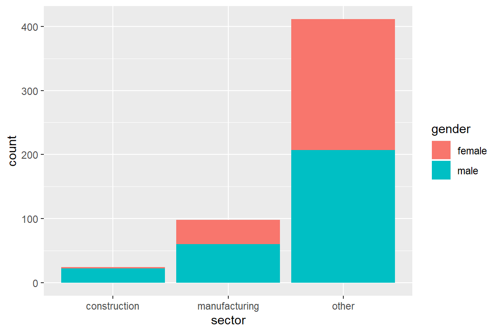
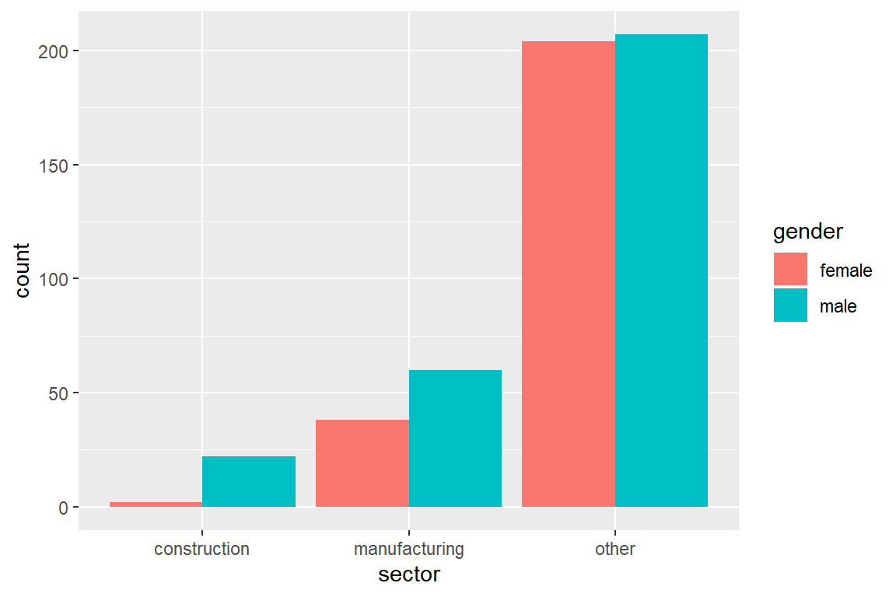
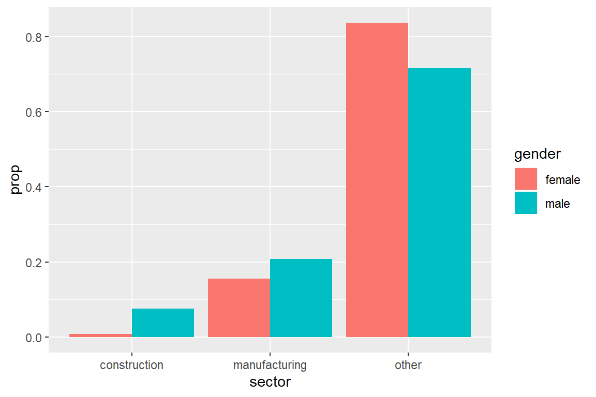
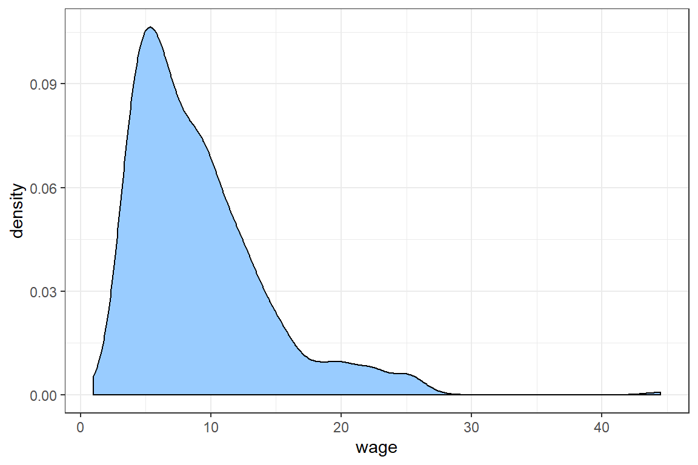
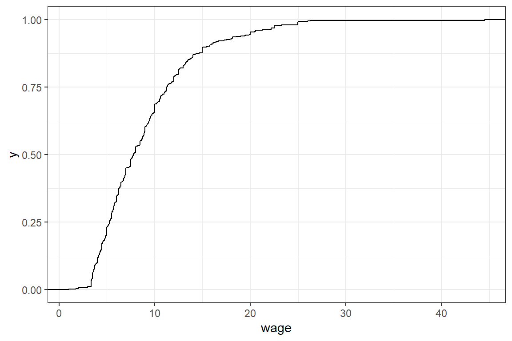
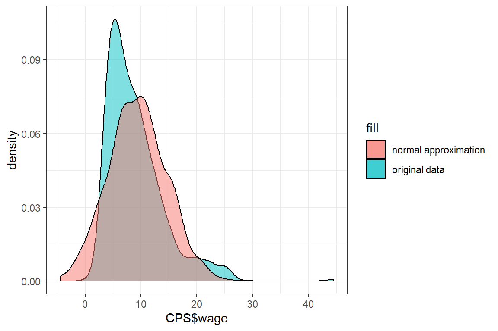
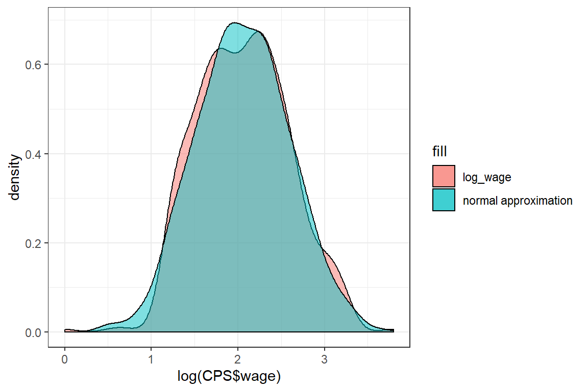

2 Data exploration
In this tutorial you read in a dataset and perform a first analysis of the variables. You will visualize the data with ggplot and calculate basic statistics such as the expected value and variance of each variable.
2.1 Importing data in R
The data for this tutorial is stored in the file CPS1985.txt, which is stored in a local subdirectory data. Check out chapter 4 of Data science in insurance: an R intro for a detailed overview of the R methods for importing data.
2.1.1 Determining the file path
Before we can import the data, we have to identify the file location. The file location can be specified by an aboslute path or a relative path.
absolute_path <- "C:\\Users\\u0110176\\Dropbox\\Verzekeringen niet-leven\\Bookdown\\data\\CPS1985.txt"
relative_path <- "data\\CPS1985.txt"Directories in the file path can be separated by a forward slash (/) or a double backward slash (\\).
Relative paths in R always start from your working directory. The command getwd() returns your current working directory.
getwd();[1] "C:/Users/u0110176/Dropbox/Verzekeringen niet-leven/Bookdown"setwd() specifies the working directory for the current R session. Once set all files in the working directory can be referenced by relative paths.
# This is the map containing all files for the tutorial
setwd("C:\\Users\\u0110176\\Dropbox\\Verzekeringen niet-leven\\Bookdown\\")
# This is a relative path from the working directory to the file we want to import
path <- "data\\CPS1985.txt"It is often convenient to set the working directory to the location of the active R file. In Rstudio the following code retrieves the directory of the active document.
dir <- dirname(rstudioapi::getActiveDocumentContext()$path)
setwd(dir)2.1.2 Import a .txt file
read.table() is the most basic import function in R. You can specify tons of different arguments in this function (See ?read.table).
We import the dataset CPS1985.txt in a variable CPS.
CPS <- read.table(path)After importing a dataset, you should always inspect the data to confirm that the data was imported correctly. head prints the first records of the dataset.
head(CPS) wage education experience age ethnicity region gender occupation
1 5.10 8 21 35 hispanic other female worker
2 6.67 12 1 19 cauc other male worker
3 4.00 12 4 22 cauc other male worker
4 7.50 12 17 35 cauc other male worker
5 13.07 13 9 28 cauc other male worker
6 4.45 10 27 43 cauc south male worker
sector union married
1 manufacturing no yes
2 manufacturing no no
3 other no no
4 other no yes
5 other yes no
6 other no noSome more data characteristics:
# nrow returns the number of rows in the dataset
nrow(CPS)[1] 533# colnames returns the variable names in the dataset
colnames(CPS) [1] "wage" "education" "experience" "age" "ethnicity"
[6] "region" "gender" "occupation" "sector" "union"
[11] "married" 2.2 Data exploration
We continue to explore the variables in the CPS dataset with a focus on wage and sector.
2.2.1 variable types
The same data can often be stored in different formats. The function class returns the type of an R object.
Use the function class to
- Determine the class of the dataset CPS;
- Determine the class of the variables
wageandsectorin the dataset CPS.
# @1.
class(CPS)[1] "data.frame"# @2.
class(CPS$wage)[1] "numeric"class(CPS$sector)[1] "factor"Within the tidyverse the class of all variables in a dataset can be determined using map_chr(<dataset>, class).
The function map(<dataset>, <function>) applies <function> to each of the columns of <dataset>. We can use map_chr when the output of <function> is of type character.
require(tidyverse)
map_chr(CPS, class) wage education experience age ethnicity region gender
"numeric" "integer" "integer" "integer" "factor" "factor" "factor"
occupation sector union married
"factor" "factor" "factor" "factor" 2.2.2 Factor variables
factor is the R-datatype for unordened categorical variables.
Some usefull functions for factorvariables are:
levels: shows the possible outcomes.table: shows the frequency of the possible outcomes.
levels(CPS$sector)[1] "construction" "manufacturing" "other" table(CPS$sector)
construction manufacturing other
24 98 411 Factors are type-safe, that is you will get a warning when you try to insert a value that is not in levels(<factor variable>).
test <- CPS$sector
test[1] <- 'insurance'Warning in `[<-.factor`(`*tmp*`, 1, value = "insurance"): invalid factor level,
NA generatedhead(test)[1] <NA> manufacturing other other other
[6] other
Levels: construction manufacturing othertable(test)test
construction manufacturing other
24 97 411 NA values are an indication that some calculation went wrong. Notice that the NA value is not shown in the output of table. To obtain the number of NA observation use sum(is.na(<dataset>)).
sum(is.na(test))[1] 1To insert a new value in a factor variable, we first adapt the set of allowed outcomes.
levels(test) <- c(levels(test), 'insurance')
table(test)test
construction manufacturing other insurance
24 97 411 0 test[1] <- 'insurance'
table(test)test
construction manufacturing other insurance
24 97 411 1 The following code applies table to all columns of the dataset CPS that are of class factor.
require(tidyverse)
CPS %>%
keep(is.factor) %>% # Select all columns of class factor
map(table) # apply the table function to these columns$ethnicity
cauc hispanic other
439 27 67
$region
other south
377 156
$gender
female male
244 289
$occupation
management office sales services technical worker
55 97 38 83 105 155
$sector
construction manufacturing other
24 98 411
$union
no yes
437 96
$married
no yes
184 349 In ggplot, geom_bar is used to construct barplots. Check out the online documentation for examples.
require(ggplot2)
ggplot(CPS) +
geom_bar(aes(sector))
Adding fill = <second factor variable> visualizes the interaction between two factor variables.
ggplot(CPS) +
geom_bar(aes(sector, fill = gender))
The default behavior is to stack bars. Adding position = position_dodge() shows bars of different color side-by-side.
ggplot(CPS) +
geom_bar(aes(sector, fill = gender),
position = position_dodge())
The following code visualizes the distribution of sector by gender.
ggplot(CPS) +
geom_bar(aes(sector,
fill = gender,
y = ..prop..,
group = gender),
position = position_dodge())
2.2.3 Numeric variables
The variable wage in the dataset CPS is numeric.
class(CPS$wage)[1] "numeric"A good strategy is to start by visualizing numeric variables in a density plot.
ggplot(CPS) +
theme_bw() +
geom_density(aes(wage), fill = "#99CCFF")
Adding theme_bw() selects the black and white theme for ggplot figures.
The density shows that most wages are between 0 and 30, but there is an outlier with a wage of more than 40.
stat_cdf visualizes the empirical cdf.
ggplot(CPS) +
theme_bw() +
stat_ecdf(aes(wage))
mean and sd calculate the empirical mean and standard deviation of a numeric variable.
mu <- mean(CPS$wage)
sigma <- sd(CPS$wage)
print(c(mu, sigma))[1] 9.032 5.141You can also calulate the mean and standard deviation using the formulas \[\mu = E(X) = \frac{1}{n}\sum_{i=1}^n x\] and \[\sigma = \sqrt{E((X-\mu)^2 } = \sqrt{\frac{1}{n}\sum_{i=1}^n (x-\mu)^2}\]
n <- length(CPS$wage)
# mean
sum(CPS$wage)/n[1] 9.032# sd
sqrt(sum((CPS$wage - mu)^2)/n)[1] 5.136There is a slight difference between our outcome and the result of sd(.), since the latter divides by n-1 instead of n.
We test whether the normal distribution is a good approximation for CPS$wage. For this we visualize the density of CPS$wage and its normal approximation in a single graph.
In order to visualize the normal approximation we simulate 1000 observations from a normal distribution with the same mean and standard deviation as CPS$wage.
normal_approx <- rnorm(1000, mean = mu, sd = sigma)rnorm generates observations from a normal distribution.
ggplot() +
theme_bw() +
geom_density(aes(CPS$wage, fill = 'original data'), alpha = .5) +
geom_density(aes(normal_approx, fill = 'normal approximation'), alpha = .5)
The shape of these densities is quite different and we conclude that the normal distribution is not a good approximation for CPS$wage. One of the reasons for this poor approximation is that the normal distribution is defined on \([-\infty, \infty]\), whereas wage has to be positive.
We transform the outcomes of CPS$wage by taking the logarithm.
log_wage = log(CPS$wage)Exercise:
Check whether the normal distribution is a good approximation for log(CPS$wage).
mu = mean(log_wage);
sigma = sd(log_wage);
normal_approx <- rnorm(1000, mean = mu, sd = sigma)
ggplot() +
theme_bw() +
geom_density(aes(log(CPS$wage), fill = 'log_wage'), alpha = .5) +
geom_density(aes(normal_approx, fill = 'normal approximation'), alpha = .5)
The approximation is better, but the normal distribution has fatter tails than the log(wage) distribution.